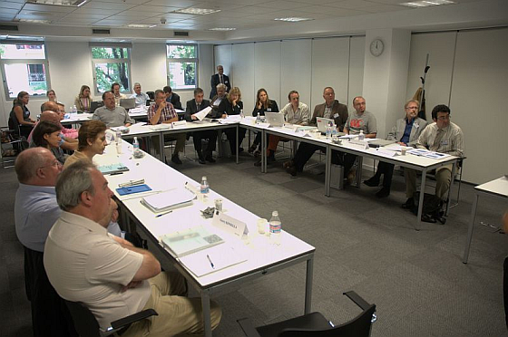

The key achievement of the Stand4All project was the development and delivery of the Stand4All training. The Stand4All training targets two different audiences — on the one hand end-user trainees who act as representatives of user organisations and on the other hand committee member trainees. The training is set up in such a way that the end-user trainees are introduced to the area of standardisation, and the committee member trainees are introduced to disability and accessibility issues. A central topic deals with the use of CEN/CENELEC Guide 6 “Guidelines for standards developers to address the needs of older persons and persons with disabilities”. Initially both audiences are kept separate. Later both groups meet in a role play exercise.
During the Stand4All project runtime three training events were organised at accessible locations in Madrid, Brussels and London. A fourth event was held in collaboration with the Irish national standardisation body NSAI in Dublin. This final event was a test case to prove that the Stand4All training can be adapted and delivered by other personnel than the Stand4All project consortium staff.
Although the Stand4All project has ended, the Stand4All training material is available. Manuals for trainees are available from this web site. The material was also converted into an e-learning module which could be used for a blended course or to introduce participants to this area. And finally there is also the expertise of the Stand4All consortium who may be consulted on the set up and delivery of another Stand4All training event.
